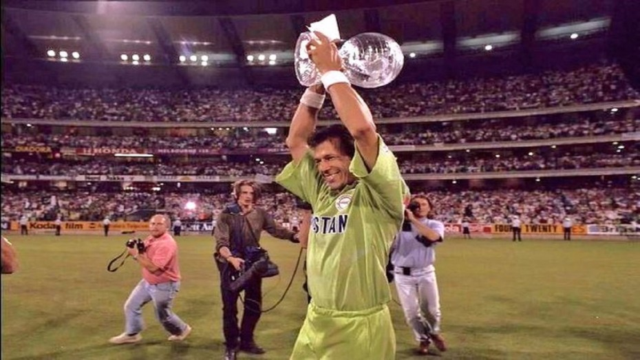

Imran Khan with Trophy
Imran told them that he knew, not just thought, but that he knew and
believed that Pakistan will win the World Cup. "I know we will win it."
What he did was transmit his self-belief onto the rest of the squad, a
monumental feat which doesn't just happen.